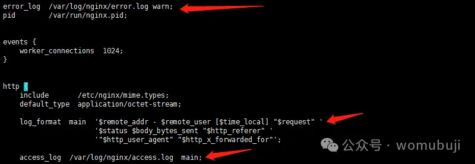

Nginx 日志主要分为访问日志（access_log）和错误日志（error_log）两种，每种日志的格式和配置方式有所不同。
访问日志（access_log）
访问日志主要记录客户端访问 Nginx 的每一个请求，包括请求的详细信息、处理结果等。访问日志的格式可以通过log_format指令来定义，也可以在配置文件中直接使用 Nginx 预定义的格式（如combined）。
自定义日志格式
自定义日志格式的语法如下：
log_format name [escape=default|json] string...;
name：自定义日志格式的名称，在access_log指令中引用。escape：设置变量中的字符编码方式是json还是default，默认是default。string：要定义的日志格式内容，可以包含 Nginx 变量。
常用变量
在定义日志格式时，可以使用 Nginx 提供的多种变量来记录请求的不同信息，如：
$remote_addr：远程客户端的 IP 地址。$remote_user：远程客户端用户名称（如果设置了用户验证）。[$time_local]：访问的时间与时区。"$request"：记录的请求的 URL 和 HTTP 协议。$status：请求返回的 HTTP 状态码。$body_bytes_sent：发送给客户端的文件主体内容的大小。"$http_referer"：记录从哪个页面链接访问过来的。"$http_user_agent"：客户端浏览器的信息。"$http_x_forwarded_for"：客户端的真实 IP（当 Nginx 前面有代理服务器时）。
示例
一个自定义的日志格式示例如下：
log_format main '$remote_addr - $remote_user [$time_local] "$request" '
'$status $body_bytes_sent "$http_referer" '
'"$http_user_agent" "$http_x_forwarded_for"';
然后在配置文件中使用这个自定义的日志格式：
access_log /var/log/nginx/access.log main;
错误日志（error_log）
错误日志主要记录 Nginx 运行过程中遇到的错误信息，包括服务器错误和请求处理错误等。错误日志的格式不支持自定义，但可以通过error_log指令来指定日志文件的存放路径和日志级别。
日志级别
错误日志的级别从低到高依次为：debug、info、notice、warn、error、crit、alert、emerg。日志级别决定了记录到日志文件中的信息详细程度，级别越高，记录的信息越少，但重要性越高。
示例
指定错误日志的路径和级别：
error_log /var/log/nginx/error.log warn;
这将把警告级别及以上的错误信息记录到/var/log/nginx/error.log文件中。
总结
Nginx 的日志格式非常灵活，可以通过log_format指令自定义访问日志的格式，而错误日志的格式则不支持自定义，但可以通过error_log指令指定日志文件的路径和级别。合理配置 Nginx 日志对于监控和分析网站访问情况、定位问题原因等具有重要意义。